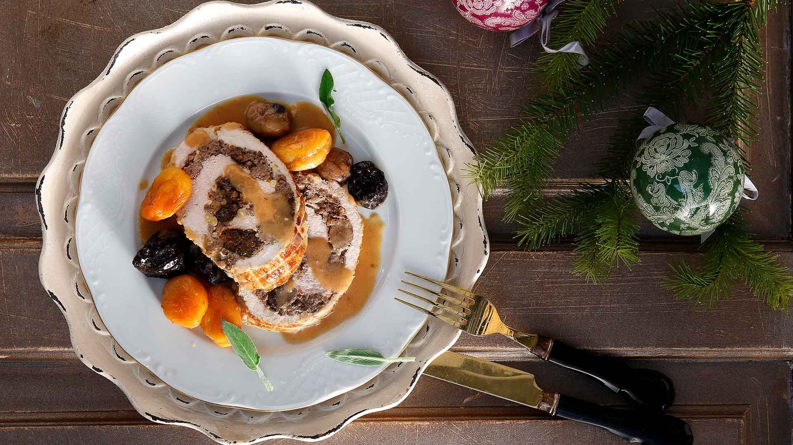

Χριστουγεννιάτικο Κοτόπουλο Ρολό
Μία ζουμερή αλλιώτικη γέμιση για ένα πεντανόστιμο γεμιστό ρολό.

Χριστουγεννιάτικη Πολίτικη Σαλάτα
Χιονισμένος Κορμός
Διαλεξτε την συνταγη που θελετε να ακολουθησετε για ενα φανταστικο χριστουγεννιατικο τραπεζι
Χριστουγεννιάτικο Κοτόπουλο Ρολό
Μία ζουμερή αλλιώτικη γέμιση για ένα πεντανόστιμο γεμιστό ρολό.
Χριστουγεννιάτικη Πολίτικη Σαλάτα
Χιονισμένος Κορμός